Թեստ 19
30:00
1. «Ճանապարհային երթևեկության անվտանգության ապահովման մասին» ՀՀ օրենքի համաձայն` կցորդ (կիսակցորդ) է համարվում`
2. "Ճանապարհային երթևեկության անվտանգության ապահովման մասին" ՀՀ օրենքի համաձայն՝ B, C, D կարգերի և C1, D1 ենթակարգերի տրանսպորտային միջոցներ վարելու իրավունքի վկայական ունեցող անձանց թույլատրվում է դրանք վարել նաև կցորդներով, եթե կցորդի թույլատրելի առավելագույն զանգվածը չի գերազանցում`
3. Տրանսպորտային միջոցների շահագործումն արգելվում է, եթե`
4. Տրանսպորտային միջոցների շահագործումն արգելվում է, եթե`
5. Ո՞ր տրանսպորտային միջոցի վարորդն է խախտում կանոնները շրջադարձ կատարելիս` արգելակման գոտի ունեցող ճանապարհին:
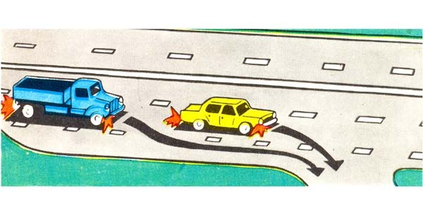
6. Թույլատրվու՞մ է արդյոք ավտոբուսի վարորդին վազանց կատարել այս նշանի ազդման գոտում:
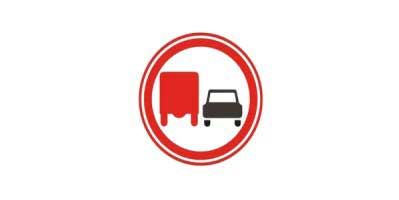
7. Ի՞նչ է ցույց տալիս երթևեկելի մասում արված գծանշումը:
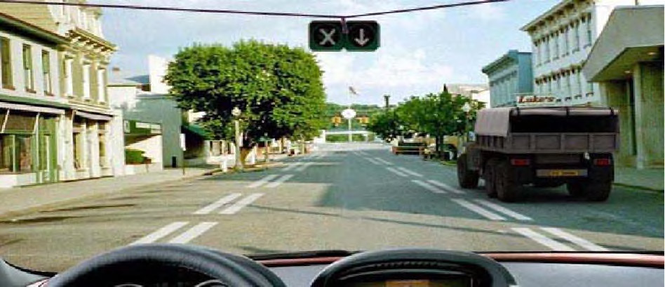
8. Տրանսպորտային միջոցները խաչմերուկը կանցնեն հետևյալհերթականությամբ:
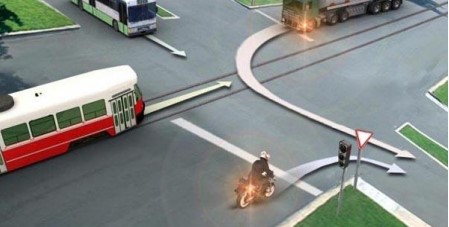
9. Թույլատրված է՞ հետադարձն այս վայրում
10. Միաժամանակ վերադասավորվելիս ո՞ր տրանսպորտային միջոցի վարորդը ունի առաջնահերթ երթևեկության իրավունք
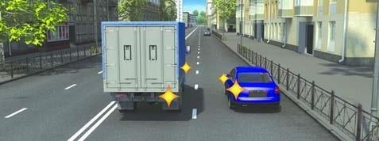
11. Այս ճանապարհային նշանը
12. Այս իրավիճակում վարորդը կարող է՞ կատարել ձախ շրջադարձը
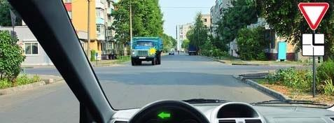
13. Աջ շրջադարձ կատարելիս այս իրավիճակում զիջել ճանապարհը
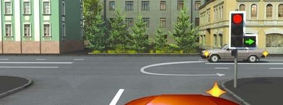
14. Տրանսպորտային միջոցները խաչմերուկը կանցնեն հետևյալ հերթականությամբ՝
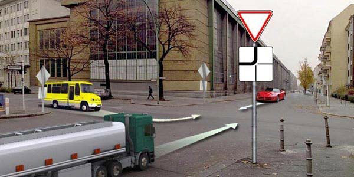
15. Տվյալ իրավիճակում որտե՞ղ պետք է կանգ առնել:
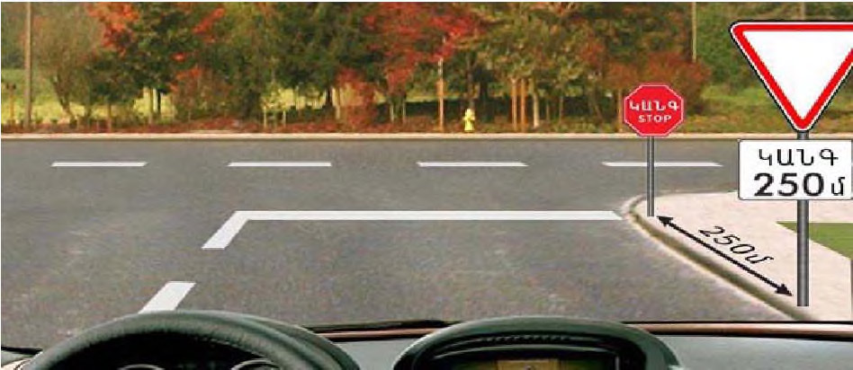
16. Ո՞ր դեպքում է վարորդը խախտել կանգառ կատարելու կանոնները
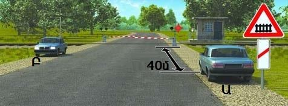
17. Արգելվում է մինչև 12 տարեկան երեխաներին փոխադրել
18. Այս նշանով կահավորված ճանապարհներին միջքաղաքային ավտոբուսների վարորդներն իրավունք ունեն երթևեկելու ոչ ավել քան`
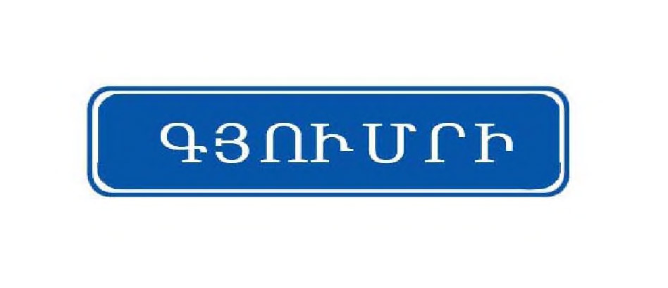